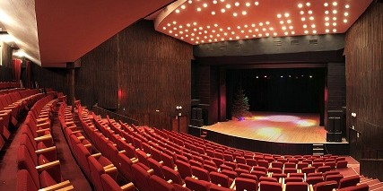
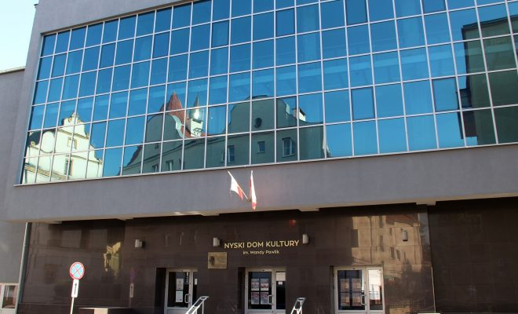

Nyski Dom kultury
 Działalność Nyskiego Domu Kultury zmierza w kierunku edukacji artystycznej, przygotowania do aktywnego uczestnictwa w kulturze, dostarczenia rozrywki, organizacji czasu wolnego, kształcenia pasji i zainteresowań. NDK jest miejscem sprzyjającym rozwojowi ruchu amatorskiego i odkrywania nowych talentów. W zajęciach prowadzonych przez instruktorów NDK bierze udział ponad 500 uczestników w różnych kategoriach wiekowych, którzy aktywnie uatrakcyjniają najważniejsze dla Nysy wydarzenia, w tym m.in. Święto Miasta. Amatorski ruch artystyczny działający przy placówce to również świetna wizytówka miasta, o czym świadczą liczne nagrody i wyróżnienia.